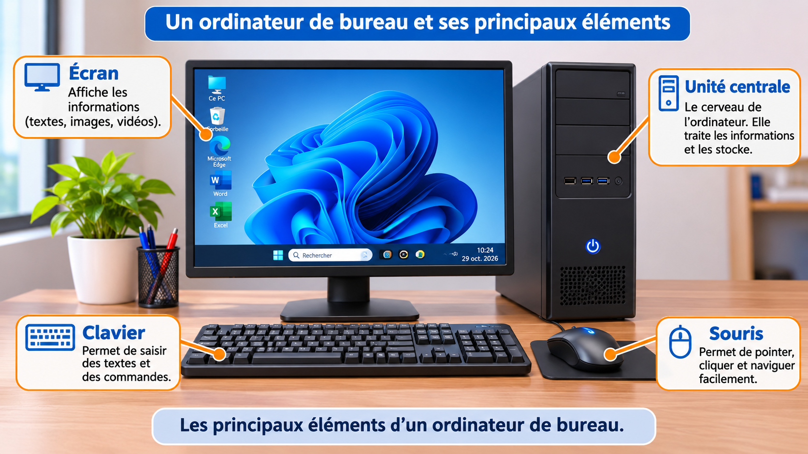
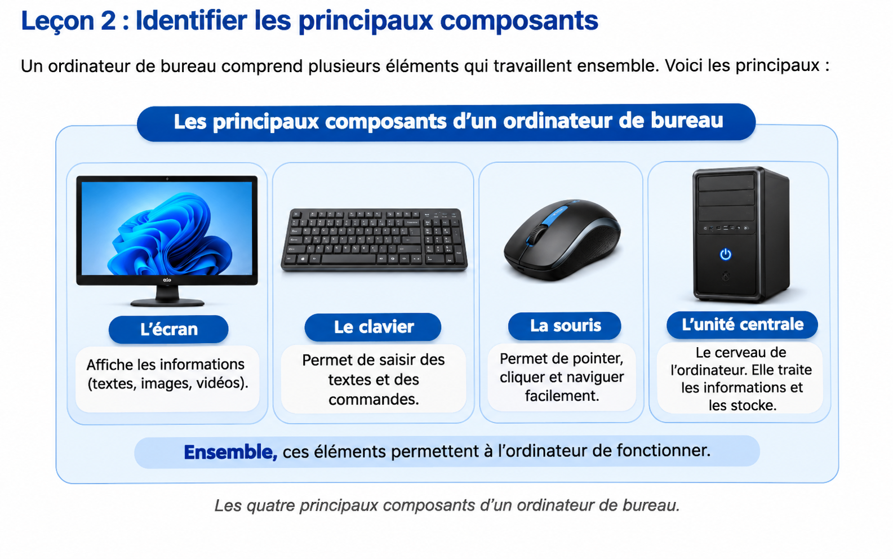
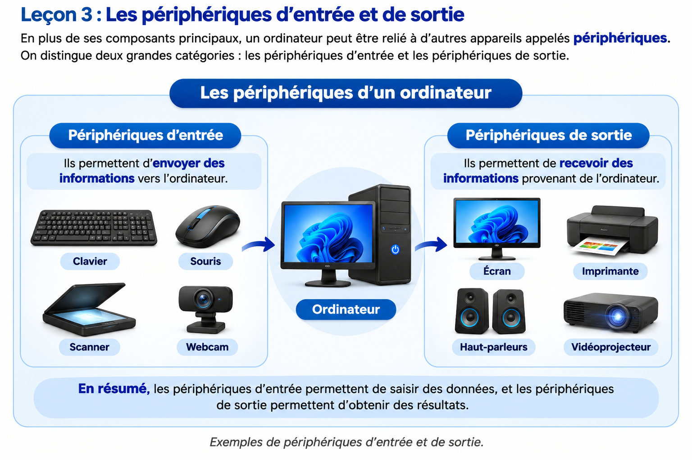
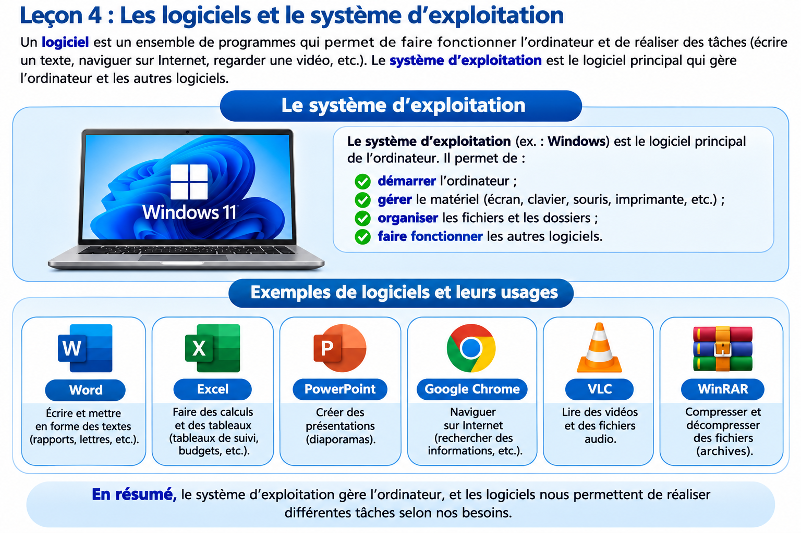
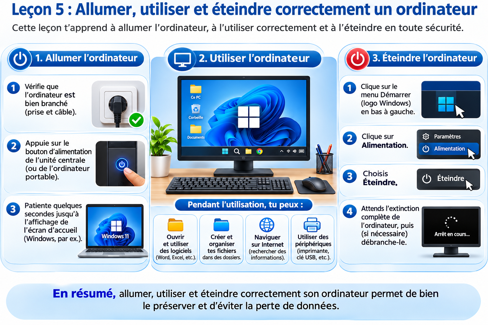
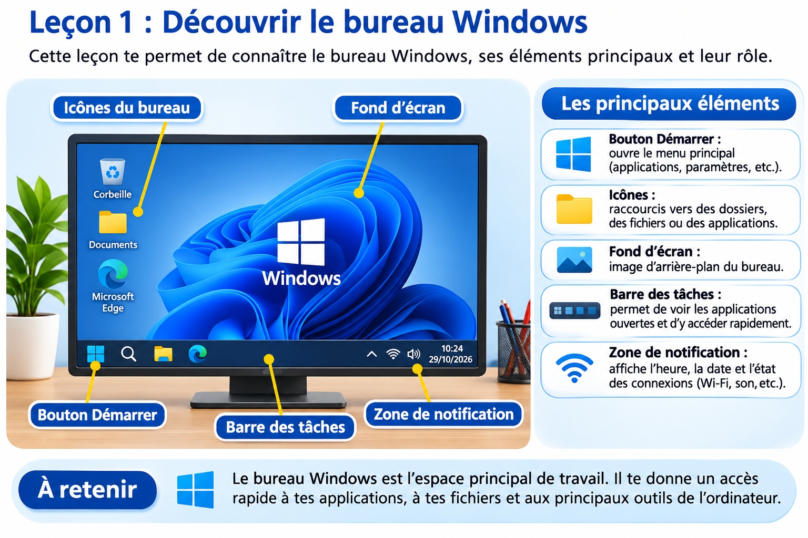
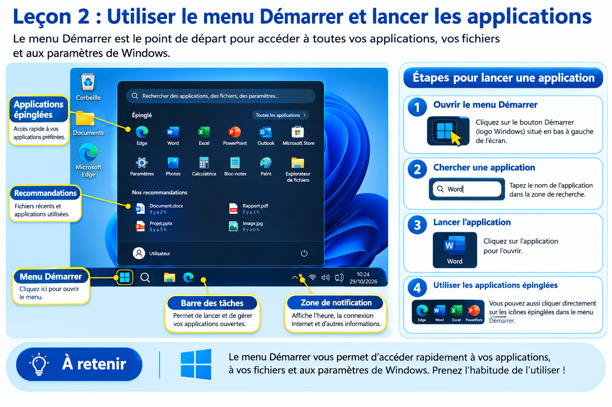
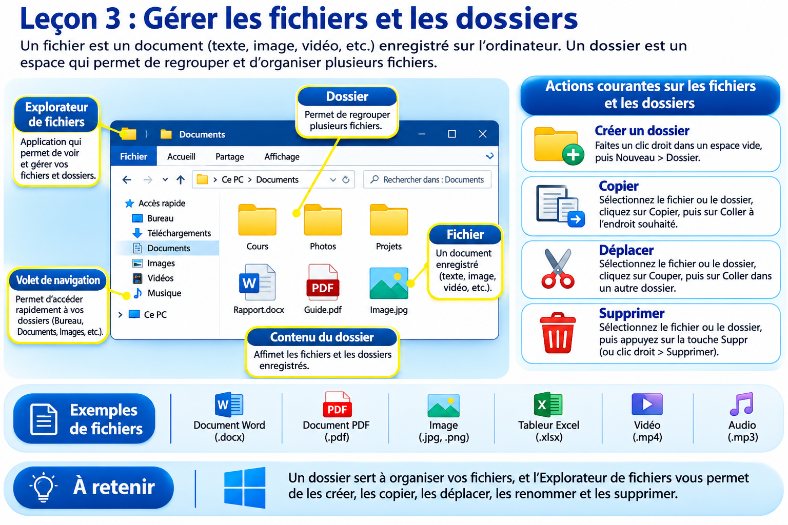
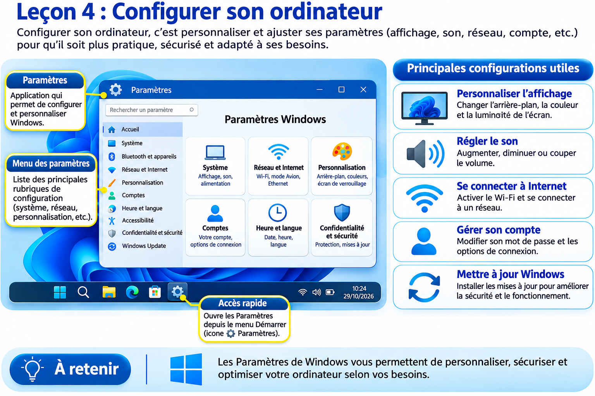
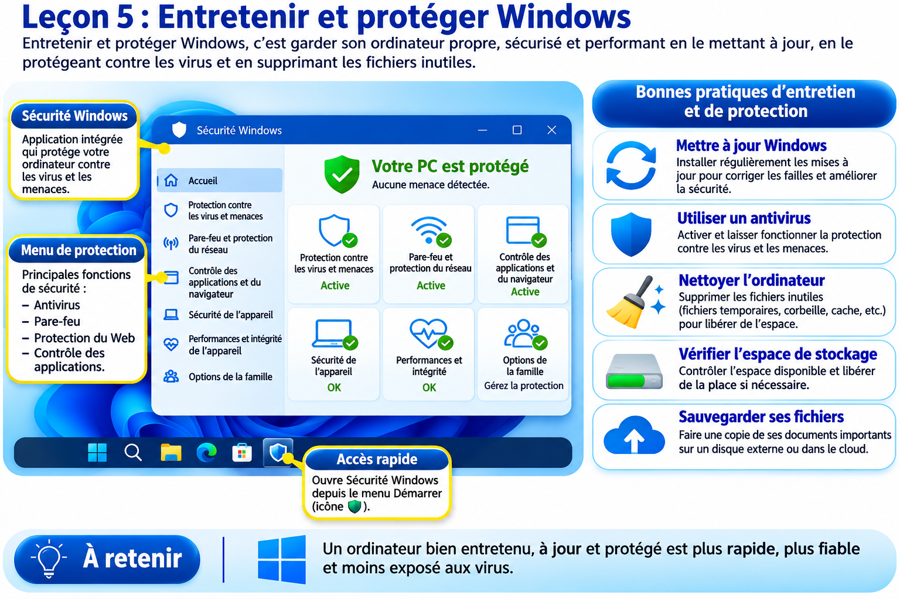

Module 1 — Découverte de l’ordinateur
Découvre les composants de l’ordinateur, les périphériques et leurs rôles.
Paiement bientôt disponibleCette formation t’aide à découvrir les bases de l’informatique, même si tu débutes.
Objectif : apprendre à utiliser un ordinateur et comprendre les principaux outils numériques.
Tarif : 5 000 FCFA par module
Modules disponibles : 4
Version de préparation : le module 2 est ajouté pour vérification. Ne publie pas encore ce fichier aux apprenants : son accès payant et son enregistrement sécurisé dans Supabase restent à intégrer.
Chaque module coûte 5 000 FCFA.
Découvre les composants de l’ordinateur, les périphériques et leurs rôles.
Paiement bientôt disponibleApprends à utiliser le bureau, les fenêtres, les dossiers et les fichiers.
Paiement bientôt disponibleDécouvre la création de documents et les bases des outils bureautiques.
Paiement bientôt disponibleApprends à naviguer sur Internet et à protéger tes informations personnelles.
Paiement bientôt disponibleCe module est destiné aux personnes qui débutent. Avance à ton rythme, lis les explications et réalise les exercices proposés.
Un ordinateur est un appareil électronique capable de recevoir des informations, de les traiter, de les stocker et de présenter un résultat.

Les principaux éléments d'un ordinateur de bureau.
Il peut servir à rédiger une lettre, effectuer des calculs, consulter Internet, communiquer, regarder des vidéos ou conserver des photos.
Un ordinateur de bureau comprend plusieurs éléments qui travaillent ensemble.

L’écran montre les informations. Le clavier et la souris permettent de donner des instructions. L’unité centrale contient les composants qui exécutent les opérations.
Un périphérique est un équipement connecté à l’ordinateur pour permettre l’échange d’informations.

Périphériques d’entrée : ils envoient des informations vers l’ordinateur, par exemple le clavier, la souris, le microphone et le scanner.
Périphériques de sortie : ils présentent les résultats produits par l’ordinateur, par exemple l’écran, l’imprimante et les haut-parleurs.
Certains équipements, comme un écran tactile, peuvent être à la fois des périphériques d’entrée et de sortie.
Un logiciel est un programme qui permet à l’ordinateur d’effectuer une ou plusieurs tâches.

Le système d’exploitation est le logiciel principal qui gère les ressources de l’ordinateur et permet d’utiliser les autres programmes.
Pour allumer :

Pour éteindre :
Réponds aux 7 questions. Chaque bonne réponse vaut 1 point. Il faut obtenir au moins 6/7 pour valider le module.
Ce module apprend à utiliser Windows, organiser les documents, configurer l’ordinateur et adopter les bonnes pratiques de sécurité.
Windows est un système d’exploitation développé par Microsoft. Il permet de communiquer avec l’ordinateur, de gérer ses ressources et d’utiliser des applications.

Une fenêtre affiche généralement une application ou un dossier. Les boutons Réduire, Agrandir et Fermer permettent de gérer son affichage.
Le menu Démarrer permet d’accéder aux applications, aux paramètres et aux options d’alimentation. On peut l’ouvrir en cliquant sur son icône ou en appuyant sur la touche Windows.
Pour rechercher une application, ouvre le menu Démarrer, saisis son nom, puis sélectionne-la dans les résultats. Par exemple, recherche « Calculatrice » pour ouvrir la calculatrice.

Pour passer d’une application ouverte à une autre, utilise Alt + Tab. Pour épingler une application, fais un clic droit sur son nom et choisis l’option correspondante si elle est proposée.
Un fichier est un document numérique (texte, image, vidéo, audio, etc.). Un dossier sert à ranger des fichiers et d’autres dossiers.
L’Explorateur de fichiers permet de parcourir les emplacements comme Documents, Images, Téléchargements, Bureau et Ce PC. Ouvre-le avec Windows + E.

Pour créer un dossier : ouvre l’emplacement, fais un clic droit dans un espace vide, choisis Nouveau puis Dossier, saisis son nom et appuie sur Entrée.
Raccourcis utiles : Ctrl + C copier, Ctrl + X couper, Ctrl + V coller, F2 renommer et Suppr supprimer.
Les paramètres Windows permettent de personnaliser le fonctionnement de l’ordinateur. Utilise Windows + I pour les ouvrir.
Pour se connecter au Wi-Fi, ouvre les paramètres réseau ou le panneau rapide, active le Wi-Fi, sélectionne le réseau, puis saisis son mot de passe.

Le raccourci Windows + Espace permet de basculer entre les dispositions de clavier installées. Les paramètres d’affichage permettent notamment de régler la résolution et la taille du texte.
L’entretien informatique aide à conserver un ordinateur stable et sécurisé. Les mises à jour corrigent des erreurs et peuvent renforcer la sécurité.
Pour rechercher des mises à jour, ouvre les paramètres, sélectionne Windows Update, puis recherche les mises à jour. Suis les instructions et évite d’éteindre brutalement l’ordinateur pendant une installation.

Windows intègre Microsoft Defender Antivirus. On peut consulter son état dans l’application Sécurité Windows, rubrique Protection contre les virus et menaces.
Ne clique pas sur les liens suspects, ne partage jamais ton mot de passe et télécharge les logiciels depuis des sources fiables. Sauvegarde régulièrement tes documents sur une clé USB, un disque externe ou un espace en ligne.
Information importante : le support standard de Windows 10 a pris fin le 14 octobre 2025. Il faut vérifier les possibilités de mises à jour de sécurité encore disponibles pour son appareil.
7 questions à choix multiples. Chaque bonne réponse vaut 1 point. Il faut obtenir au moins 6/7 pour valider le module.
État technique : le questionnaire est intégré pour vérification visuelle. Son envoi à Supabase n’est pas encore activé. Ne considère pas ce formulaire comme une validation officielle.
Ce questionnaire historique est conservé temporairement pour préserver le fonctionnement actuel de l’enregistrement des scores et des attestations. Le nouveau quiz sécurisé de 7 questions par module sera intégré après adaptation des fonctions Supabase.
Tu as terminé la présentation des bases de l’informatique.
Voir les autres cours Retour à l’accueil